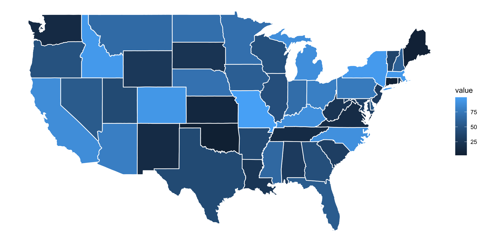
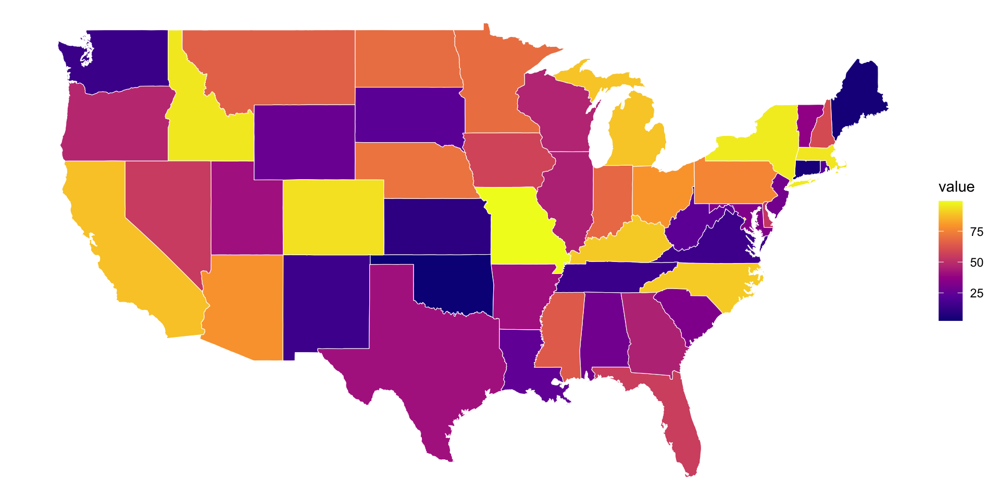

Lecture 9
Spatial Data Part 2 - Map Visualizations
Agenda
Discussion of Reading
Activity (Attention)
Raster Data and Vector Data Cont.
Maps Introduction
Open notes quiz and Collaborative!!
Final Project Elements
Final Project Proposal
- Type: Google doc pdf
- To: BCourses
- Due: 4/20, 11:59 PM
Presentation:
- Type: google slides
- Due: BCourses
- Due: 4/27, 11:59 PM
Coding Materials:
- Type: QMD file + csv of your data
- To: BCourses
- Due: 4/27, 11:59 PM
ICEBREAKER
If your life had a dashboard, what’s one metric that would look concerning?
Reading Discussion
Article: These Maps Tell the Story of Two Americas: One Parched, One Soaked
Why maps matter?
Imagine you have data for all 50 states.
A table looks like this:
- hard to see patterns
- hard to compare regions
But a map?
You instantly see: - clusters - outliers - regional patterns
Introduction to Maps
We already learned:
- Vector data → shapes (states, counties)
- Raster data → continuous surfaces
- Color → preattentive attention
- Gestalt → grouping patterns
Maps combine ALL of these ideas!
We are not just drawing shapes, we are attaching meaning to space.
Before coding: what are we building?
We need two things:
- Geometry (where things are)
- Data (what we want to show)
Then we combine them.
What makes NYT maps so powerful?
NYT maps are powerful because they:
- Show clear geographic patterns
- Use simple color scales
- Remove visual clutter
- Focus attention on one variable
Small Example Maps Code (Loading Data)
long lat group order region subregion
1 -87.46201 30.38968 1 1 alabama <NA>
2 -87.48493 30.37249 1 2 alabama <NA>
3 -87.52503 30.37249 1 3 alabama <NA>
4 -87.53076 30.33239 1 4 alabama <NA>
5 -87.57087 30.32665 1 5 alabama <NA>
6 -87.58806 30.32665 1 6 alabama <NA>Create Data for Map
First Map (Basic)

Make it NYT-style (Basic)

Introduction to Plotly
Plotly is a package that turns static plots into:
- interactive plots you can hover, zoom, and explore instead of just looking at a picture, you can interact with the data
Why do we use it? Traditional plots (ggplot2):
- static image
- no interaction
Plotly:
- hover over points
- zoom in/out
- click and explore
Example